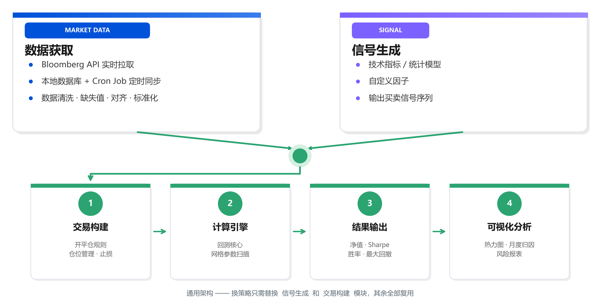
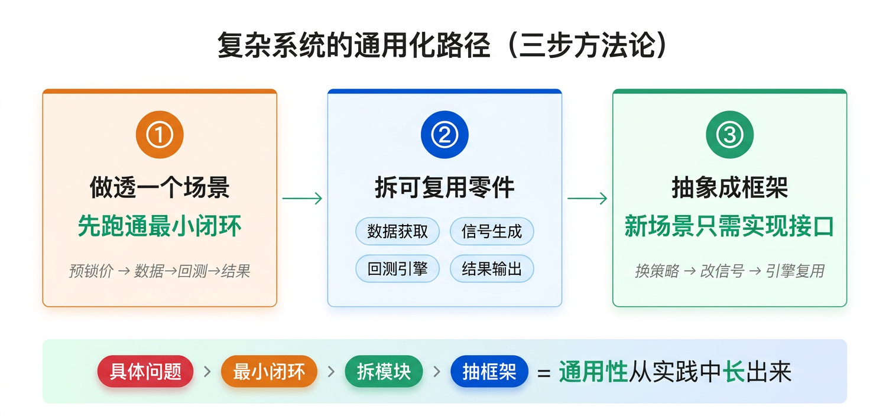

01
从提需求到自己造
做工具的成本变了，思维方式也该变了

一个外汇民工的 AI 实战经验分享
外汇交易台，日常就是跟报表、定价、策略、市场情报打交道。
过去一年用 AI 折腾了不少东西，今天分三个层次聊：
思维转变 + 工具箱建设
从想法到可视化的完整案例
知识体系 + Agent 探索 + 踩坑
 02
02

做工具的成本变了，思维方式也该变了
从 「我需要什么功能」 → 「我要解决什么问题」
方法论：先聊 Plan → 几轮讨论细化需求 → 敲定方案 → AI 实施 → 你来验收
04
不要一上来就想做一个「平台」
遇到重复性的活 → 先写最快的解法 → 跑通了沉淀成工具 → 下次直接复用
05
06
大脑（Token）公司已经给了，真正的难点是数据 —— 清理好数据，工具才跑得起来
07

一个完整案例，从策略想法到回测验证到可视化
 09
09

10
↑ 热力图示意：颜色最深 = 最优参数组合（★）
网格搜索 = 全量参数组合一起跑，最优区域一目了然
11

13

让 AI 有知识、有记忆、能进化
自动评估分析质量 → 高分归档知识库 → 越用越精准
15
每天开盘前问一句「今天有什么要注意的？」
自动搜新闻 + 查数据 + 给判断
每半小时预测一次涨跌
一上午结束后自动复盘，对比预测 vs 实际
美联储放鹰？日央行干预？
随时问，自动拉相关数据给出概率判断
想让它更「博学」，喂了 5 本完整外汇经典进去 → Token 直接爆了，还没开始分析就脑容量塞满了
16
通晓历史、哲学、美学的 AI 助手
每天推送一段有趣的内容，扩展认知边界
"今天聊聊佛光寺的斗拱 —— 那可是我和思成骑驴走了三天才找到的……"
技术上：同一套 Agent 架构，换个 System Prompt 就跑起来了
全自主交易 Agent —— 自己判断、自己下单
目前还在实验阶段，跑模拟盘
理想很丰满，现实是：
市场比 AI 复杂得多，离真正自主还很远
有兴趣的可以会后聊
17
人设 + 能力边界
它擅长什么、不擅长什么
领域知识 + 技能模块
但别一次塞太多（教训）
外部数据 + 内部平台
让它能查、能算、能存
Reflection + Memory
用得越多，越懂你的场景
18
先解决眼前问题
再沉淀成通用工具
别一上来就想做平台
先做透一个场景
再拆模块、抽框架
通用性是长出来的，不是设计出来的
知识 + 反思 + 记忆
让它越用越懂你的场景
这才是长期价值
19
用 AI 写模板、做汇总 —— 从最痛的点开始
把背景信息喂给 AI，让它帮你总结、对比、提炼
把工作方法、常见问题整理成文档，作为 AI 的参考手册
用自然语言描述需求 → 它帮你写代码 → 你来验收和调优
20

而是让你把时间花在真正需要判断力的事情上
谢谢大家！